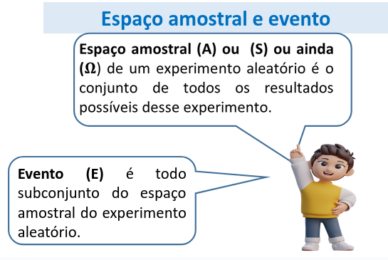

Uma moeda é lançada ao acaso qual a chance de se obter cara?
Experimento aleatório é qualquer experiência ou ensaio cujo resultado é imprevisível, por depender exclusivamente do acaso.
Eventos determinísticos é o que significa que, com base nas condições iniciais, podemos prever com certeza o resultado.

Se você escolher aleatoriamente uma letra no alfabeto, qual a probabilidade de selecionar uma vogal?
Qual a probabilidade de sortear uma carta no baralho e essa carta ser um ás? Seja um baralho com 52 cartas
Os números naturais de 1 a 10 foram escritos, um a um, sem repetição, em dez bolas de pingue-pongue. Se duas delas
forem escolhidas ao acaso, o valor mais provável da soma dos números sorteados ser
a) ser 11:
b) ser 20:
Um cartão é retirado aleatoriamente de um conjunto de 50 cartões numerados de 1 a 50. Determine a
probabilidade do cartão retirado ser de um número primo.